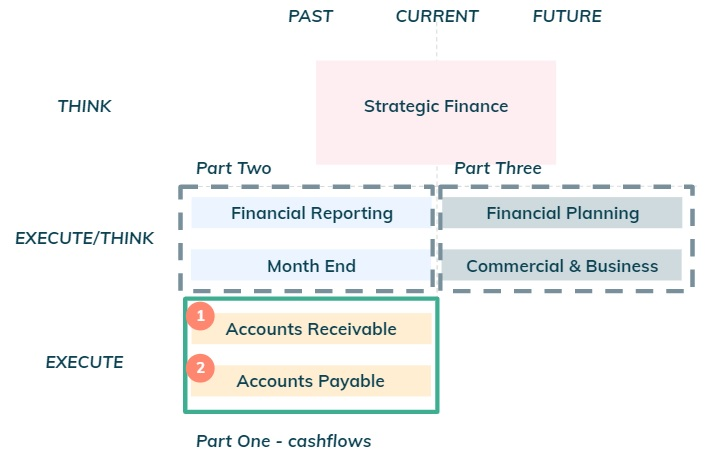

Summary
This note goes through a detailed overview of the operations relating to Accounts Receivable and Account Payable for a young startup and explains how to automate some of the steps. Part two and three will cover respectively Financial Reporting and Financial Planning.
Day to to day finance: cash flows
In a previous note, the key finance tasks were split as follows.
 Figure 1: Finance key tasks.On this note we are going to drill down on the operations for the cash flows of a young startup as per the figure below.
Figure 2: Accounts Receivable and Accounts Payable.Cashflows are thus equal to cash inflows from clients relating to revenues net of cash outflows paid to suppliers. As a reminder, a common source of mistakes in numbers is to represent both as positive numbers and subtract them; to avoid this, one should represent cash inflows as a positive number (e.g £100) and cash outflows as a negative number (e.g (£20)) and then ADD both numbers to get to cash flows (£80 = £100 + (£20)).
Day to to day finance: Accounts Receivable
Whenever there is revenue earned, there will be an invoice sent to a client requesting payment for the service or product and the amount is recognised in the P&L statement. Accounts Receivables (“AR”) thus relates to client invoices for which payment has not been received yet. These show up as a current asset in the balance sheet (i.e. cash inflow expected soon).
 Figure 3: Accounts Receivable concept.
Figure 3: Accounts Receivable concept.
Operationally, it will be the bookkeeper's responsibility to do the bookkeeping (i.e. recognise revenues in the accounting system), generate an invoice, send it to the client and match the cash inflow to the outstanding invoice.
 Figure 4: Accounts Receivable operational steps.
Figure 4: Accounts Receivable operational steps.
Accounting systems such as Xero or Quickbooks automate steps A and B above, however this will break above a certain volume of invoices (likely fine for up to hundreds per month), different currencies and number of legal entities. For simple applications the following spreadsheet (AR automatic emails for invoices), automates sending an email with an invoice to a client using a google apps script (see appendix for details).
Day to to day finance: Accounts Payable
Whenever there is a cost incurred, there will be an invoice received from a supplier requesting payment for the service or product and the amount is recognised in the P&L. Accounts Payable (“AP”) thus relates to unpaid supplier invoices. These show up as a current liability in the balance sheet (i.e. cash outflow expected soon).
Figure 5: Accounts Payable concept.The operational steps to pay invoices are illustrated below, however there is an additional complexity required for steps B & C below that should be automated to save time.
Figure 6: Accounts Payable operational steps.First let's lay out the process that requires improvement.
- Step 1: supplier sends an invoice to an employee at the Company (the one that requested the service or goods). In some situations, this is sent to Finance who then needs to figure out who should approve it internally.
- Step 2: the employee may exchange several emails with the supplier if there are mistakes in the invoice.
- Step 3: the employee then forwards the approved invoice to an email
distribution list which forward’s emails to an Optical Recognition System (OCR) to digitalise the invoice.
This is then push to the accounting system (Xero below in this example)
- There is risk that an unapproved invoices get sent to the accounting system as the OCR as not checks in place for emails received
- Step 4: there is typically a weekly pay run to pay approved invoices due
- Step 5: there is one payment set up in the online banking system, for each invoice, which is very time consuming.
 Figure 7: Detailed operations to approve and pay invoice
Figure 7: Detailed operations to approve and pay invoice
Now let's lay out an almost fully automated process.
- Step 1: supplier sends an invoice to an email distribution list. This contains an email to an AP system (link here - Corpay One ) that deals with the OCR.
- Step 2: AP systems automatically upload invoices to the platform.
- Step 3: AP systems allow to set up workflows based on different rules which are used to automatically determine the Approver of the invoice. T his automates a lot of the process already.
- Step 4: Once approved goes to the bookkeeper. There is NO risk that an unapproved invoices get sent to the accounting system as otherwise it would not receive it.
- Step 5: Bookkeeper pushes approved invoices to the accounting system.
Now let's lay out an almost fully automated process.
- Step 6: Accounting system used to automatically provide information to Wise on all invoices to be paid (payment details and amount)
- Step 7: One transfer set up to pay with full amount of invoices to be paid
- Step 8: One funds are received at Wise, it automatically pays each supplier individually
 Figure 9: Almost fully automated process to deal with approving invoices.
Figure 9: Almost fully automated process to deal with approving invoices.
This is a much more automated process and it is much less likely that there will be any mistakes done. It takes only minutes (instead one hour or more) to do the payrun. The final step to fully automate this is to make payments from the AP platform which will be launched soon.
If you require support or have any questions my contact is: 
Appendix - AR automatic emails for invoices
Make a copy of the spreadsheet before following the steps described further below.
Figure 10: Make a copy of the spreadhseet.- Step 1: Go to the URL and copy the spreadsheet ID to a word doc.
For my example it was
“1K5jHVBWgto4FvnvAsHJ6GQM60pnoubcpqRKjS19zJGM”
 Figure 11: Get spreadsheet ID.
Figure 11: Get spreadsheet ID.
- Step 2: Select the “Ouput” tab then copy the tab ID to a word doc. For my example it was “458436874”
- Step 3: Go to extensions and click “Apps Script”. On the first time the script is run you will need to authorise access.
- Step 4: Update the “SS_ID” and the “sheetID” with the details specific to your spreadsheet.
 Figure 14: Update spreadsheet and tab information.
Figure 14: Update spreadsheet and tab information.
- Step 5: Update the contacts and invoice details.
- Step 6: Go to invoices menu and click “Send invoice”. The script then runs and sends an email with an invoice in a pdf.
 Figure 16: Send invoice.
Figure 16: Send invoice.
An invoice is sent to the recipient - see example below (link here).
 Figure 17: Example email.
Figure 17: Example email.